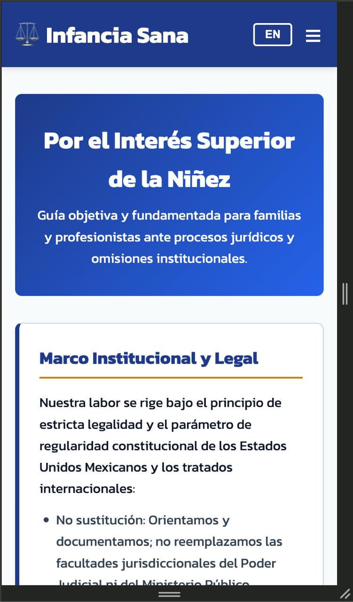
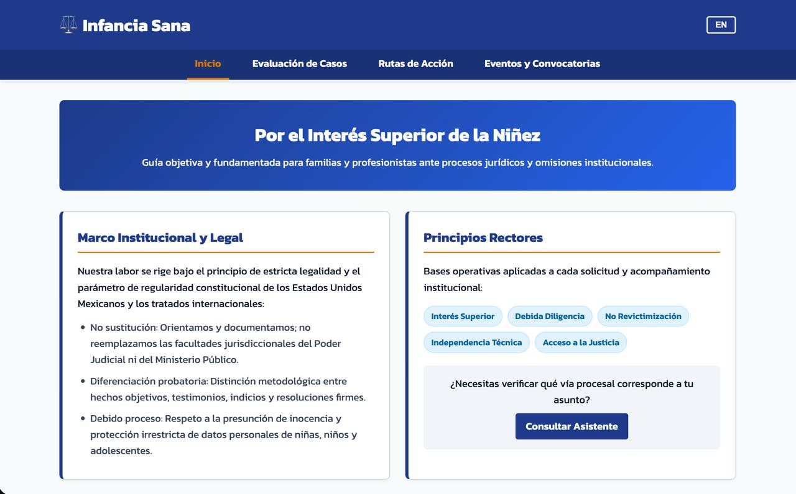

Site Name
Proposed Name: Infancia Sana (Legal Guidance & Child Protection Portal)
Reason for Name: The name "Infancia Sana" translates to "Healthy Childhood." It represents the primary institutional commitment to ensuring that children develop in safe, stable environments protected by the rule of law, due process, and the principle of the best interests of the child.
Optional Domain: infanciasana.org
Site Purpose
The Infancia Sana website provides an accessible, evidence-based orientation portal for parents, citizens, and legal practitioners dealing with family law procedures, child visitation conflicts, and institutional delays in Mexico. The site delivers:
- Clear explanations of national legal frameworks, constitutional rights, and the Convention on the Rights of the Child.
- Rigorous case evaluation guidelines that differentiate verified facts from unproven claims or informal accusations.
- Actionable pathways for citizens to submit formal administrative complaints, request judicial follow-ups, or seek child protection assistance.
- An interactive tool allowing visitors to identify their procedural standing and appropriate next steps.
- A dynamic calendar for public rallies, legal clinics, and community support meetings.
Scenarios
Target audience questions that drive the content and structure of the website:
Scenario 1: "My ex-partner is obstructing court-ordered visitation time with my child, and the family court clerk is delaying my filings. What exact evidence must I gather, and what legal motion or administrative complaint can I file?"
Scenario 2: "I am supporting a family facing procedural neglect from a public institution. How can I verify if an official action violates constitutional due process, and where can I find upcoming public rallies or legal advisory sessions?"
Color Schema
The selected color schema reflects solemnity, institutional trust, and human protection:
(Primary / Headers)
(Buttons / Links)
(Accents / Badges)
(Background)
Usage Application: Deep Navy Blue (#1e3a8a) is applied to primary headings, the header container, and borders. Accent Blue (#2563eb) styles interactive states, hyperlinks, and button hovers. Amber Gold (#d97706) highlights section borders, key terms, and visual badges. Light Slate (#f8fafc) provides a clean, high-contrast, accessible background across all pages.
Typography
The site utilizes one clean, highly readable modern sans-serif typeface to ensure legibility across all devices:
- Font Family:
'Kanit', sans-serif(via Google Fonts). - Headings (h1, h2, h3): Kanit, bold (weights 600 and 700), providing strong hierarchy and structure.
- Body & Paragraphs: Kanit, regular (weight 400), set to a
1.6line height to maximize accessibility and reading comfort.
Wireframes
Visual layout sketches representing the home page architecture in both views:
Single-column stacked design with hamburger navigation, hero banner, vertical content cards, and footer.

Multi-column layout utilizing CSS Grid for horizontal navigation, side-by-side cards, and responsive content modules.
